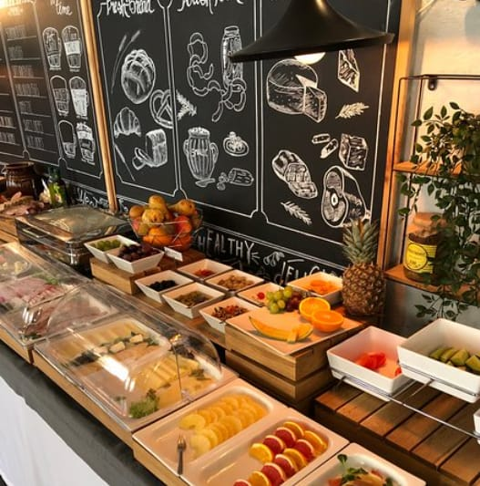

ABOUT
Black Olive Kitchen is a hideaway where good food, laughter, culture and conversation come together in a delightful melting pot. Fashion, art, music and style fuse here to create an unforgettable Mediterranean mosaic.Dappled sunlight on soft arm chairs.
A white pebbled courtyard punctuated by bougainvillea. Worlds collide and time stops in this Mogul mansion . Casual elegance with its beautiful white walls, a vast Banyan canopy, and a stunning, star-lit, and a tree-top terrace restaurant
DETAILS

SPECIAL ITEMS
CUISINES
Polish, European, Grill, Central European, Bar
SPECIAL DIETS
Vegetarian Friendly, Vegan Options, Gluten Free Options